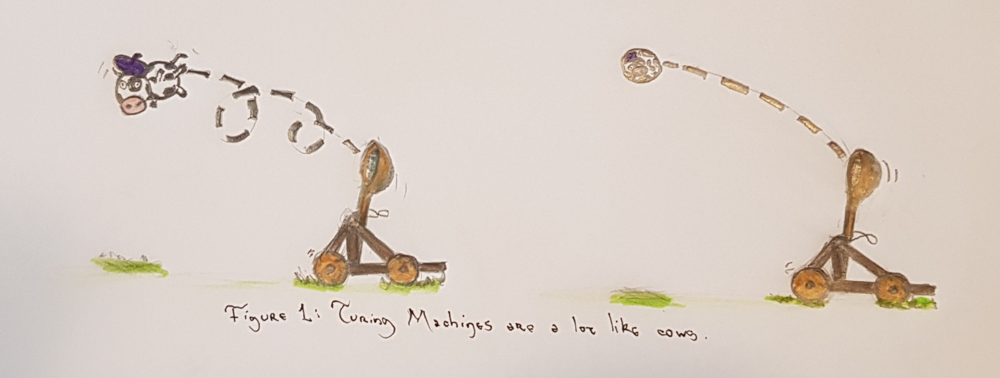
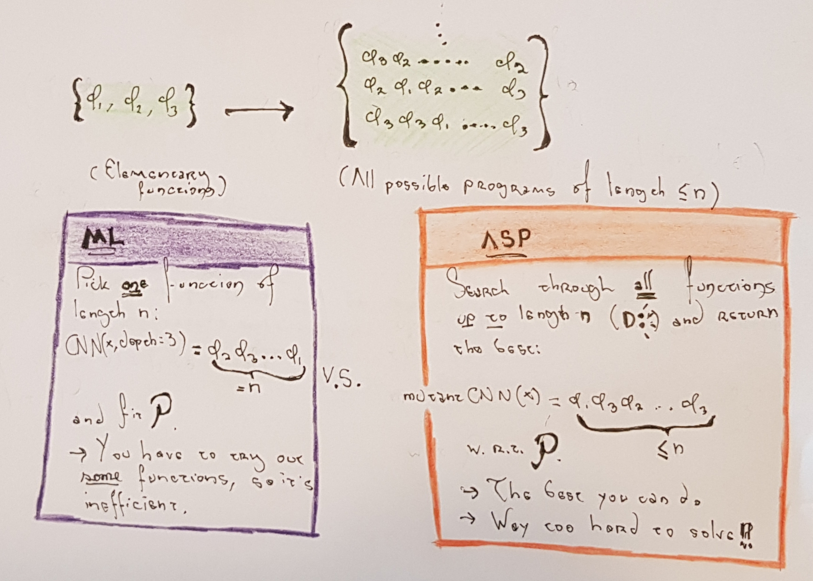
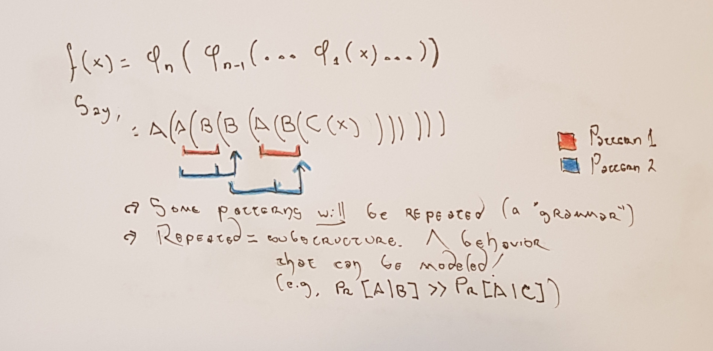

This is an extended version of a post that was shared here. All the opinions expressed here are my own. Angry mail should be directed at me. Happy mail too--I'd rather receive that one.
About a year ago, I published a paper called "On the Bounds of Function Approximations". It was a fun project (and an even more fun conference, I think that the organizers at ICANN really put their hearts into it), which was based on my original research from graduate school. It deals with a theoretical approach to analyzing neural architecture search (NAS), but in such a way that, in 100 years, if someone decided to throw neural networks out the window, these results would still hold. However, I've always felt that the vague title, the lengthy discussion, and the (shortened) conclusion section always cause it to be misinterpreted, even though I think the subject is fairly straightforward with some (extra) space to write.
My contributions can be summed up succintly: generalized NAS is the "right" way to do machine learning (neural networks or not). However, I showed that it is so hard, that even computers can't solve it. When you stop being so rigorous as a mathematician (e.g., dropping the "iNfiNiTe SpAcEs", "zEro ErRoR", and "bEsT mOdEl eVeR" constraints), you get some still-hard-but-solvable problems that have exploitable substructures. This in turn allows us to understand and design algorithms that generalize "well enough". It also explains some of the common pitfalls of NAS algorithms (*cough* not outperforming random search *cough*). If some of this (or all of it) doesn't make sense, don't worry; explaining it is the point of this post!
Here I will informally discuss the results from the paper. More concretely, I hope that by the time you're reading this post you will:
This topic is very close to my heart--in fact, it's why I started my work in machine learning!--so hopefully I can get you as excited as I was when I wrote the paper (even though the dry style of academic writing will not convey it). Ultimately, computation is fun, and you can't lose anything by adding some rigor on your algorithmic design!
In this section we will develop the language needed to understand the results of the other sections: namely, why NAS is the best way to solve a machine learning problem, and why NAS algorithms don't often outperform random search. We'll begin by thinking of computation as an abstract process (series of steps), rather than a calculation.
A Turing Machine is the theoretical abstraction to model the "physics" of computers. This means that whatever your laptop can do, can also be done by a Turing machine. But, on the other hand, like a very lame Spiderman, your laptop can't do all what a Turing Machine can. I always like to explain it as the physics analogy of "spherical cows": if you try to, say, throw a cow with a catapult and figure out where it is going to fall, you need to make a lot of assumptions. Indeed, it simplifies your life mathematically if you assume that the air resistance is zero; or if the cow is spherical, and/or massless, and/or just a point flying through the air. At the end you'll get a very idealized way to describe cows that actually works out pretty well. Turing Machines are the spherical cows of the computer world.
To be fair, the analogy of spherical cows is mostly to describe how idealized is a Turing Machine. Unlike our massless bovine friend, Turing Machines are far more powerful than "realistic" computers, since they have things like infinite storage space. We won't go into detail into the rigorous definition, since for the purposes of this post it suffices to know three things:
If your laptop had infinite storage, you could say that your Python compiler interpreter is a UTM. Why? Well, can you write a Turing Machine in Python? Yes! Hence, it is able to simulate it, and it follows that your Python interpreter (i.e., all the rules and executions written in C) along with your hypothetical infinite memory is a Turing complete model of computation.
Note that Turing completeness and the Church-Turing Thesis, for the purposes of this post, imply that the models of computation that are Turing complete are "essentially" equivalent. What other models of computation are there, and that are Turing complete? Quite a bit, actually. The λ-Calculus is one. Magic: The Gathering is another. Portal 2 is another (this one is not Turing complete but functionally complete, which is a much weaker statement). The recursively enumerable functions is another. Crucially, neural networks also happen to be Turing complete. This last part has a few ifs and buts, but the key is that with the right architecture, you can simulate any function to an arbitrary degree of error. Indeed, this class of functions include those that can be simulated by a Turing Machine. Why does that matter? Well, for one, because in computation, functions are programs, and viceversa. So theoretically a neural network could be used to write the entire Sid Meier's Civilization VI (desktop icon, TOAs and all), or to generate a program to determine whether an input image is either a cat or a dog. This latter use ("generating programs from data") is a very useful perspective on what machine learning actually is, but a bit beyond what we are discussing. Just keep it under your hat.
As always, there's WAY more than can be said around this. Like, tons more (here there be dragons!). I tend to go on tangents a lot, so let's stay focused. If you're interested on this topic, you can start by reading this.
All sufficiently powerful models of computation are, as we discussed, equivalent in a certain sense. And, all sufficiently powerful models of computation have one strong limitation: the Halting Problem: Mathematicians would very much like to know whether a certain proof is, well, provable. Software engineers would like to know if their program is bug-free. And theoretical computer scientists are weird because they like to ask whether you can write a program that takes in programs (which is fine), and says whether the input program will terminate or loop forever.
As you probably have guessed, you can't write a program that can answer this question, for any input. This question is called the Halting problem. That's why, for example, when you write code you have to wait until after it's compiled to find out all the bugs that you, your editor, and your compiler never caught. Or, in the case of Python, until you're three hours into the experimentation and suddenly it tells you "NaMe 'x' iS nOt DeFiNed". Note that it is a "problem" insofar as it is a computational problem (i.e., a question to a computer) for which you cannot write an algorithm. This also means that a lot of (computational) problems in computer science are equivalent to the Halting problem. We say that a problem that cannot be solved with a Turing Machine is undecidable.
More annoyingly, since by the Church-Turing Thesis any Turing complete model of computation equivalent to a UTM, this means that your chosen model of computation will be limited by the Halting Problem. This means your laptop, BERT, Presburger arithmetic, and your Ti-80 are all effectively limited in the same sense. In fact, most of these are actually much weaker than a UTM! Can you tell why? (As a warmup, note that BERT runs on your laptop).
In this section we will develop the theoretical tools to analyze NAS and ML from a rigorous standpoint. There aren't any proofs, but the ideas are here. We'll use these ideas to show that NAS, as a computational problem (so an abstract model), is the best possible solution to your standard machine learning problem. Then, in the next section, we'll further develop these ideas to show why random search outperforms most NAS algorithms.
Right, so let's forget about decidability for a bit and talk about ML. Let \(D \sim \mathcal{P} \) be a dataset sampled from some unknown probability distribution \(\mathcal{P}\), and for simplicity, let us assume we've got a binary classification task. The central problem of machine learning is to come up with a function $$f: D \times W \rightarrow \{0, 1\}$$ that can generalize well to any possible dataset sampled from \(\mathcal{P}\) (not just \(D\)). It could be said that you're trying to approximate the function \(\mathcal{P}\) with \(f\).
As an example, if you were trying to learn to distinguish images of cats and dogs, your model has only a limited subset of data (say, the top 100 results from looking up "dog" and "cat" in Google). You have to train your chosen model \(f\) (say, a 3-layer convolutional neural network) by searching through some assignments of \(W\) (the weights of the network, in this case) until you find something that works well and minimizes your test error. In this case, \(\mathcal{P}\) is either the real function that returns all of Google's images of cats and dogs (and says that they are either cats or dogs); or an assumed function that takes in all possible images of cats and dogs that have existed and will ever exist, and returns their label. This is mostly a modeling question and we will not care about it. What matters is that under some technical assumptions, the test error of \(f\) with respect to \(\mathcal{P}\) will be roughly the same for any other sample of the graph of \(\mathcal{P}\). Note that this doesn't need to be a binary problem, or a classification task--the results work the same. Also note that there exists at least one function with zero error: the function itself.
But what is your problem, really? Is it to find a good set of weights for your 3-layer CNN, or is it to classify cats and dogs properly and with high probability? Normally, the answer is the latter. It follows then that we do not need to be sold on a choice of \(f\) and we can relax these assumptions even further. Assume there is a "bag" of all possible functions from which we can draw the "best" possible function--then our problem of approximating the right function for the problem is not just globally optimal (as in, within the search space), but universally optimal. After all, being Turing complete is for the family of machine learning models, and not for a specific one.
It turns out that all models of computation are built from a few basic functions (let's call them "elementary functions"). There's no need to go into detail as to what those elementary functions are (since they vary from one model of computation to another); it's just sufficient to note that as long as you glue them together, you get more and more complex functions that are able to express ALL possible algorithms (since we chose a model of model of computation that is, after all, Turing complete). So, picture them as very abstract LEGOs. Combining a sequence of elementary functions in the right way will give you the absolute best function to solve the problem.
We'll refer to the problem of finding the right sequence of functions that also generalizes well to any possible dataset as the Function Approximation problem, or FA. This is mostly a notational convenience, but from a rigorous standpoint we want to be precise on what our problem is. You can also think about it as a sort of generalized NAS problem. One key result of the paper (which we will discuss next) is that there is no algorithm to solve FA to zero error. The proof is not hard, but we want to talk more about the good stuff: NAS and ML, and nonzero error.
There is one key distinction on talking about fitting weights and sequences of functions to a given dataset (the FA problem), and fitting weights to a fixed function to minimize the dataset error, which is what ML normally does (let's call it the ML problem, and note that it is a way to solve FA). Technically both things will give you "a" function that approximates the error, but there's no guarantee fixing some function and minimizing its weights will be the best (ever tried to beat the GLUE benchmarks with a two-layer MLP of hidden size = 300?). On the other hand, finding a fixed-length sequence doesn't "force" your solution to assume anything beyond bitstring length. Let's call this solution strategy the architecture search problem, or ASP. We've dropped the "neural" part because we don't need to work with neural nets--this result is so general, that it could be done with Magic: The Gathering cards!. Yes, you could in theory have a cat/dog classifier made entirely of MTG.
The distinction between ASP and FA is more of a technical nature: FA admits infinite-length sequences (which we don't want), while ASP finds the best solution to the problem within a fixed sequence length. Why don't we want infinite-length sequences? Well, for one, it would break computation, and even if it were finite, you still have the zero-error problem. You can't verify that your function has zero-error for ALL functions because it reduces to the Halting problem.
Unlike ML, ASP will guarantee the absolute best solution as long as you have the elementary functions of your favorite model of computation in your search space. Think about it: your search space has ALL the weights, and ALL the functions. So from a mathematical standpoint, it is the best you can do.
"The best you can do" is A LOT, since computers are quite powerful. If you had an algorithm that could solve ASP, you could approximate any function to an arbitrary degree of error. It really doesn't matter which one, because you will be "fitting" the best possible architecture/program/proof automatically. On the other hand, ML would have a fixed function of fixed sequence length (which is also in ASP's search space), and it has a remarkably low probability of being the best function in the space.
Put it in another way, an efficient algorithm for ASP would imply that the process by which a scientist/practicioner picks a new architecture can be automated. Mind you, we haven't shown that we can solve it, but if we could, it would be amazing. This would have massive implications, too: by the correspondence between models of computation, one could see that we could automate literally anything that involves some semblance of computation. Not just (generalized) theorem proving, but things like zero-generalization-error compilers, near-perfect language understanding, and so on. I'd be out of a job!
Suspicious yet? Yes? Well, of course! This sounds too good to be true, and indeed, it can't be done efficiently. Without going into too much detail, it is NP-Hard. Yuck. So ASP is the best you can do within computable bounds, and ML is the "bare minimum" you can do (but as we know, it is relatively efficient to solve). Can we get somewhere in between?
Yes! This is where contemporary NAS algorithms fall. Instead, what we will do is say that we want to only look at a subset of ASP's search space. As long as it is "small enough", we will get a relatively easier problem to solve. As a thought experiment, a subset of size one makes the problem equivalent to ML, and a subset of size "all possible combinations of length \(n\) in the search space of ASP", reduces--for lack of a better word--to ASP. Let's call that the "approximate" ASP problem, or a-ASP.
We said earlier that ASP would be optimal as long as we kept the LEGOs (elementary functions) of our model of computation IN the search space. It's the same here. We "build" our search space in such a way that the LEGOs stay in the set, and then we just enforce length. It's not globally optimal, but it's way better than ML: since all the functions we want are in the search space, we have a good shot at getting a much better function with better optimality guarantees. Big ifs and buts here, which we'll talk about in the next section. If our set builder function retains a polynomial size (i.e., it doesn't try out all combinations), this is only slower than ML by a polynomial factor, which is always nice. We can think of a-ASP as a "theoretical NAS".
So, to sum up this section: fitting a probability distribution is best done when you have multiple function choices, and (obviously) to zero error, a.k.a the FA problem; however, this problem is undecidable. If you allow non-zero error, you get ASP, but it's still a very hard problem to solve, even when having the elementary functions in your search space guarantees a universally optimal result. If you fix the sequence length, you get ML, but, as we saw, it's a naive way to solve FA knowing what we know now. So we pulled out of our computational hat another rigorous computational problem, a-ASP, that looks for a subset of the sequence lengths. If we put some constraints in the subset, we retain the theoretical goodness of ASP with only a relative polynomial slow-down with respect to ML.
We've reached what I think it's the most important result of this post: how to find the optimal architecture for a neural network efficiently. The main takeaway is: you can find it, it can be good enough, and it can beat random search. To show all of this, we need a bit more background material. Let's get started.
Note: I keep claiming this without actually proving it. We'll have the proof in this section, but if you didn't know this was a thing, here's a very famous paper on the subject.
In ML/Optimization there's this very famous result called the No Free Lunch theorem, or NFL. There's quite a few versions of it, from the one by Shalev-Shwartz and Ben-David to the ones by Wolpert and Macready. Both results are equivalent in interpretation, but (formally) are related to different problems. I am particularly fond of this result (either one is fine), because it does hit some deep questions about what it means to learn well from a computational perspective (i.e., reasoning). Here's a good intro on the subject. Patrick Winston's doctoral thesis also talked about this from a different angle.
Either way, here's how we'll use the NFL theorem for our discussion: imagine that you have a computer, and you ask it to find the lowest-error-function for an arbitrary task. It can pick any search algorithm to find this function, but it doesn't know anything else. The NFL theorem states that for a very large class of search algorithms, it doesn't matter which algorithm you pick, because they will all have the same average performance across all tasks--random!
However, Wolpert and Macready also went on to prove that some classes of algorithms are not subject to NFL. So, they have free lunches. So, they can outperform a random search. See where this is going?
The class of optimization algorithms that present a free lunch are referred to in the paper as those that have the "self-play" property. I won't give a rigorous definition of it, but the gist of it is that the candidates in the search space "talk" to one another. The easiest way to think about it is with a genetic algorithm: you could just evolve architectures separately, and kill/grow them by randomizing their genomes until you get something good, or you could ask them to exchange information somehow. "Somehow" is a massively tricky subject, believe it or not, and one day I'll write a separate post about it because it's wicked interesting. For now, just know that algorithms where the candidates talk to one another do outperform random search, and are said to have the self-play property. Some examples of algorithms with the self-play property are coevolutionary algorithms and variations on bandit algorithms.
So most NAS algorithms do not outperform random search because they attempt to solve a-ASP, but this problem and its more complex siblings are too close to the NFL horizon: the amount of tests (say, \(n\) architectures) you have to do mean that your average performance is much lower than if you only tested one (like in classical ML), since you're dividing by \(n\) in NAS. Another way to think about it is that writing a general-purpose algorithm that surpasses random search for a single architecture is way easier than a general-purpose algorithm that surpasses random search for an exponential number of possible architectural candidates (as in ASP), and for an arbitrary input problem. Even for a polynomial number of candidates (a-ASP, a.k.a NAS for neural networks) this result will have a linear dependence on your average performance.
So without the self-play property, there's no valuable information exchanged across tests, and all you can hope is to sort-of-hit some sort of spike in performance at some point. Average that average (of architectural performances) across possible tasks, and you've got yourself a giant problem in the form of a lowered confidence interval. However, as we saw, algorithms that have the self-play property are able to outperform it relatively well.
Designing said algorithms is a bit hard if you don't know what the problem looks like, right? I mean, you want your candidates to talk to one another, which in CS terms it means that your algorithm needs to exploit the substructure of the problem. It so happens that, from what we've learned, NAS has an inherent substructure. Indeed, in ASP/a-ASP the substructure is right there in the problem definition. Don't believe me? Look again!
Ok, if you didn't see it that's also fine--it took me a while to figure it out. It's the sequence of functions. The sequence of functions, since it's, well, a sequence, does have an intrinsic substructure: one function always follows another, so if, say, \(A\) after \(B\) doesn't work well, you might want to avoid using them--and you can code that into an algorithm!
And, finally, the second-most important result of my paper: if you were to put the set of elementary functions in the search space, and if your algorithm to solve a-ASP has the self-play property, you will get a much better result than doing plain ML, and in polynomial time, and beating random search. This is a general-purpose solution: it doesn't need to be related to neural networks, and it doesn't need to be related to a specific problem. Finally, this is the best you can do.
The first conclusion from all of this should be that you can't write a program that will find the right (optimal, zero error) architecture for any problem. However, by relaxing some constraints and by using some technical results, we can immediately see that some classes of algorithms offer the "best-you-can-do" answer that can still be computed in polynomial time. They will not be as powerful as a general-purpose algorithm, but they will get fairly close. In fact, it would be the best you can theoretically hope for in a generalized setting. One thing we did not discuss much is what happens when you are only trying to solve one problem, as opposed to say, an infinite number, like a service or a library would. In that case, these results do not hold! Doing a fine-grained analysis of NAS would require more information about your problem and your search space, and would not yield the same results in all settings.
Indeed, some of the most successful NAS algorithms out there, like the Evolved Transformer, rely on some sort of self-play property. By the results we saw earlier, this class of algorithms will outperform a random search, and hence they would be "best-you-can-do". Of course--and this is very important--self-play is not the only thing. For full optimality, you need your elementary functions in the search space. This is more of a theoretical result, but in practice any sufficiently small and diverse search space should do it. I didn't discuss it much, but "a" good set of elementary functions includes recursion, identity, and composition, which are a subset of the so-called μ-recursive functions. For example, allowing skip-connections in neural networks is (a composition of) identity and (another) composition. Adding these functions into your search space guarantees a much more expressive set of candidates, and hence increases the chances of your algorithm getting a near-optimal solution.
Finally, this is a more broadly applicable result than "tHe ThEoRy oF nAs". NAS is a very, very expensive problem to solve, because you have to train multiple variants across multiple hyperparameters. Having good algorithms means having good ways to solve the problem efficiently: fast, and in a cost-effective fashion. Conversely, if you do not understand the intrinsic limitations of computation, you will design algorithms that--with luck--will perform well in one problem but will not transfer to the next. This is ok, unless someone else (or you yourself) attempt to use your algorithm on a separate problem. As we saw earlier, this is a common issue in NAS, where most algorithms do not generalize well.
So by now you have hopefully learned some of the deepest secrets of what the machine learning problem is trying solve, and how it ties to the study of computation. You have also seen how we can "work backwards", and use the foundational results of computer science to study neural architecture search and generalized, model-free function approximation. Next time you want to build a classifier of cats you know that, in depths beyond the "deep neural nets", there be dragons!
I hope you enjoyed reading this as much as I enjoyed writing it! Till next time,
Adrian de Wynter March 15, 2021